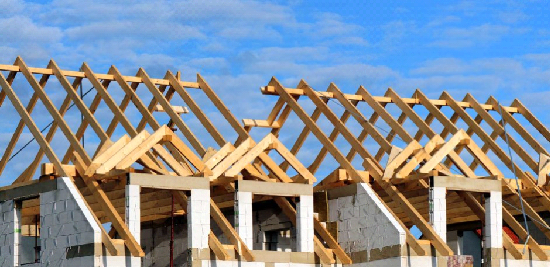
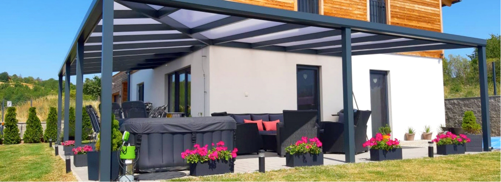

Fábián Máté ácsmester vagyok. Szakmámban már 27 éve dolgozom -ez egyben a hobbim is -, elsősorban a minőségi munkára törekszem.
Szeretném röviden bemutatni ács- és tetőfedő vállalkozásomat, valamint a pályafutásom során elért eredményeimet.
Az iskola befejezését követően kiváló mestereimnek köszönhetően elsajátítottam a szakma gyakorlati elemeit. Az itt szerzett tapasztalatok után saját vállalkozásba kezdtem. Megszereztem az ács-állványozó mesterlevelet, annak érdekben, hogy a szakma legjobbjai között lehessek.
Tanulmányaim során a tetőszerkezetek készítésénél olyan problémákkal találkoztam, amelyek megoldását nem nagyon tanították a szakiskolákban. Motivációt éreztem arra, hogy az új technológiák bevezetésével még jobb minőségű munkát végezhessek. Németországban dolgoztam, ahol olyan technológiákat sajátítottam el, melyekkel a munkáim minőségét tökéletesíthettem.
Rátaláltam egy olyan tetőtervező -és faszerkezettervező programra, mely megkönnyíti a munkámat és pontos számításokat eredményez. E program segítségével az ügyfeleim valamint ács-kollégáim részére 3-Dimenziós képeket tudok prezentálni, ahol a faszerkezetek valósághűen szerepelnek.
A tetőszerkezeteket és az egyéb faszerkezeteket, kézzel zsinórpad készítése nélkül, műhelyben vagy CNC vezérelt gépsoron is le tudom gyártani.
 